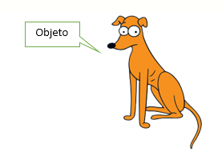

La Programación Orientada a Objetos (POO) es un paradigma de programación que se basa en el concepto de "objetos", los cuales son entidades que combinan datos (atributos) y funciones (métodos) relacionadas. Este enfoque permite modelar entidades del mundo real de una manera más natural y estructurada en el código.

Clases y Objeto
- Clase: Una clase es una plantilla para crear objetos. Define las propiedades y comportamientos comunes que tendrán los objetos creados a partir de ella.
- Objeto: Un objeto es una instancia de una clase. Representa una entidad concreta y tiene sus propias características (atributos) y comportamientos (métodos).
- Atributos: Los atributos son las características o propiedades de un objeto. Pueden ser variables que almacenan datos, como números, cadenas de texto, booleanos, u otros objetos.
- Métodos: Los métodos son funciones asociadas a un objeto que pueden realizar acciones o calcular valores relacionados con el objeto. Los métodos pueden modificar los atributos del objeto o realizar operaciones específicas.
- Constructor: Un constructor es un método especial que se ejecuta automáticamente cuando se crea un nuevo objeto a partir de una clase. Se utiliza para inicializar los atributos del objeto y puede aceptar parámetros para configurar el objeto de manera personalizada al momento de la creación.newConstructor()
JavaScript
class Animal {
constructor(name, age) {
this.name = name;
this.age = age;
}
getName(){
return this.name;
}
setName(name){
return this.name=name;
}
}
const animal1 = new Animal('Dog', 3);
const animal2 = new Animal('Cat', 5);
animal1.getName();
animal2.getName();